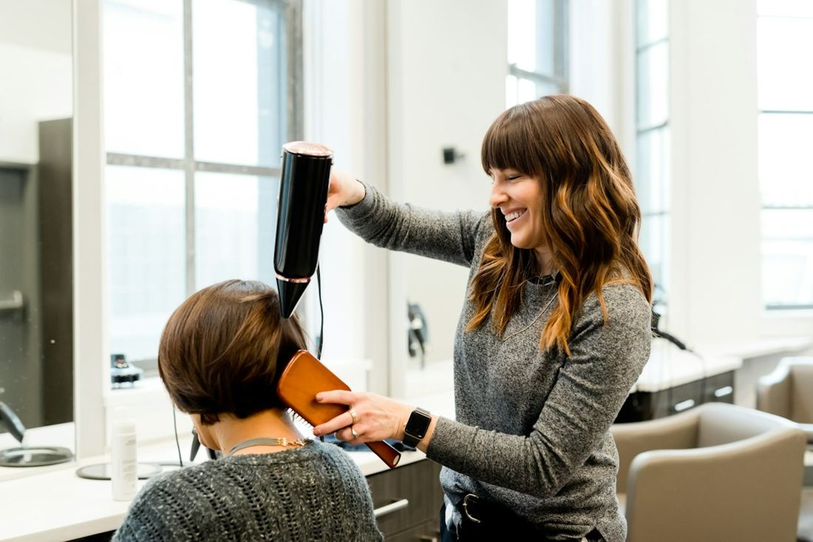
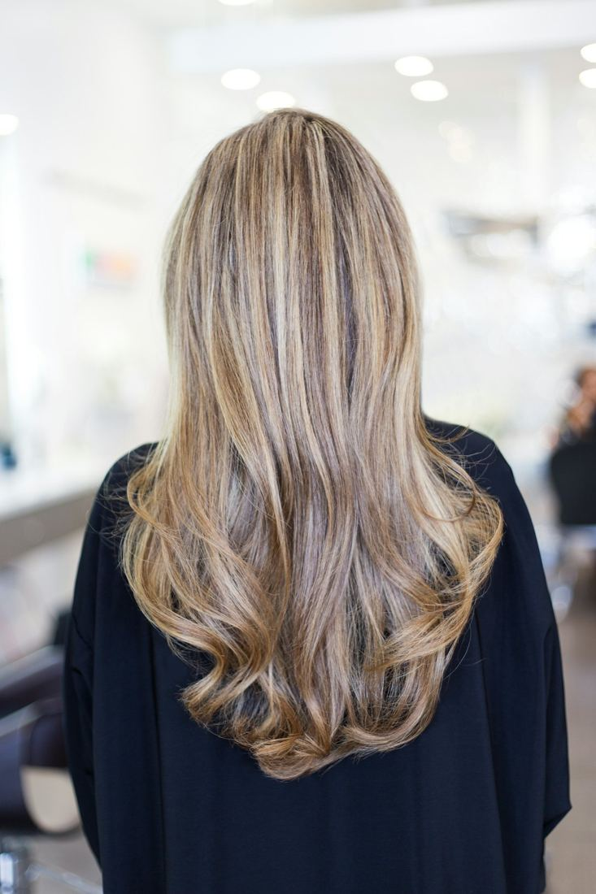
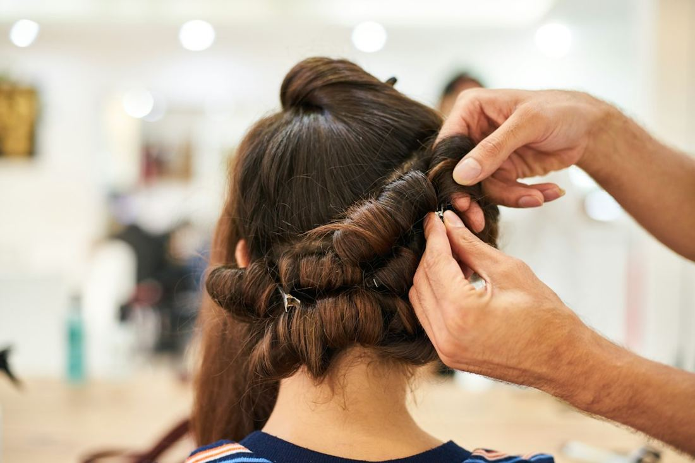
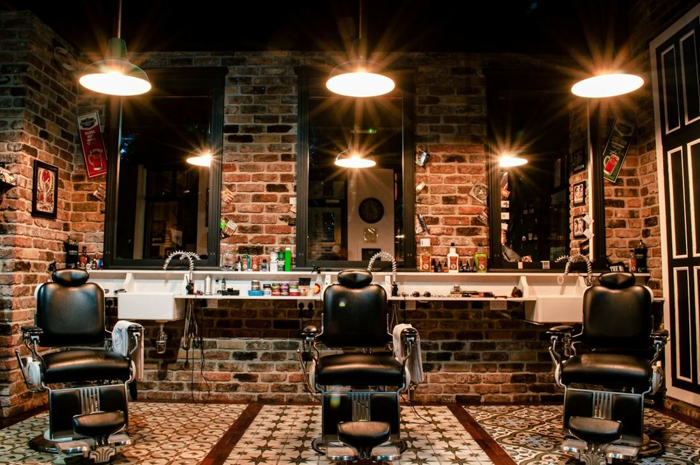

Via Alfredo Cappellini 16 · Milano
Il salone di Daniela Benatti a due passi dalla Stazione Centrale: la cura dei tuoi capelli, a denominazione d'origine controllata.
Il salone
Parrucchieri D.O.C. è il salone di Daniela Benatti in Via Alfredo Cappellini 16. Il nome gioca con la sigla delle eccellenze italiane, e il logo lo dice con una linea tricolore e un paio di forbici.
Colore, taglio e piega, con una cura del capello a tutto tondo. E una media perfetta: 5 stelle su 21 recensioni Google.
Ispirazioni


Fotografie illustrative: le foto dei lavori del salone possono sostituirle.
Servizi
Colorazioni e sfumature studiate per te.
Classico o moderno, sempre su misura.
Il tocco finale, per ogni giorno.
Prezzi e durata su richiesta: scrivici su WhatsApp per un consiglio personalizzato.
Perché sceglierci
Media perfetta su 21 recensioni.
Segui da vicino ogni cliente.
Comodo da raggiungere, anche con i mezzi.
Scrivi al 340 172 7910.
Recensioni
Valutazione media su 21 recensioni Google
Dove siamo
| Lunedì | Chiuso |
| Martedì – Venerdì | 9:30 – 19:00 |
| Sabato | 9:30 – 18:00 |
| Domenica | Chiuso |
Siamo in Via Cappellini, tra la Stazione Centrale e Porta Venezia: perfetto per chi abita in zona o passa da qui per lavoro.
Prenota
Scrivici su WhatsApp o chiamaci: ti rispondiamo per fissare il tuo appuntamento.
Domande frequenti
Il modo più semplice è scriverci su WhatsApp o chiamarci: concordiamo insieme giorno e orario.
Dipende dal tipo di capello e dal risultato desiderato: contattaci per un consiglio e un'indicazione personalizzata.
Certo: raccontaci cosa desideri, anche con una foto di riferimento, e ti consigliamo la soluzione più adatta.
Trovi indirizzo e mappa nella sezione «Dove siamo» qui sopra.